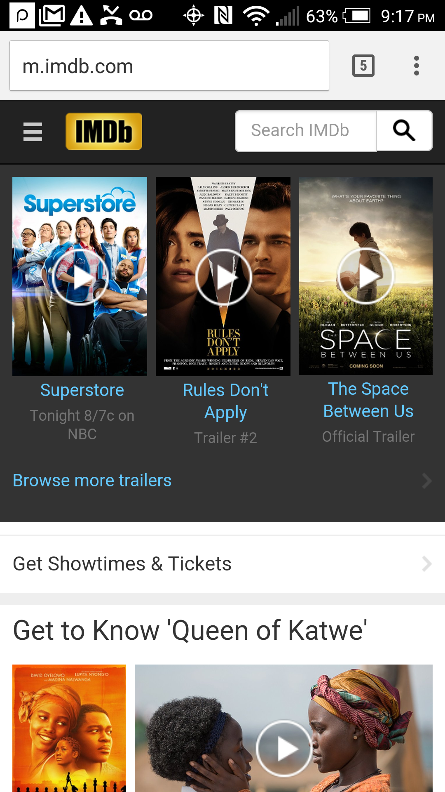
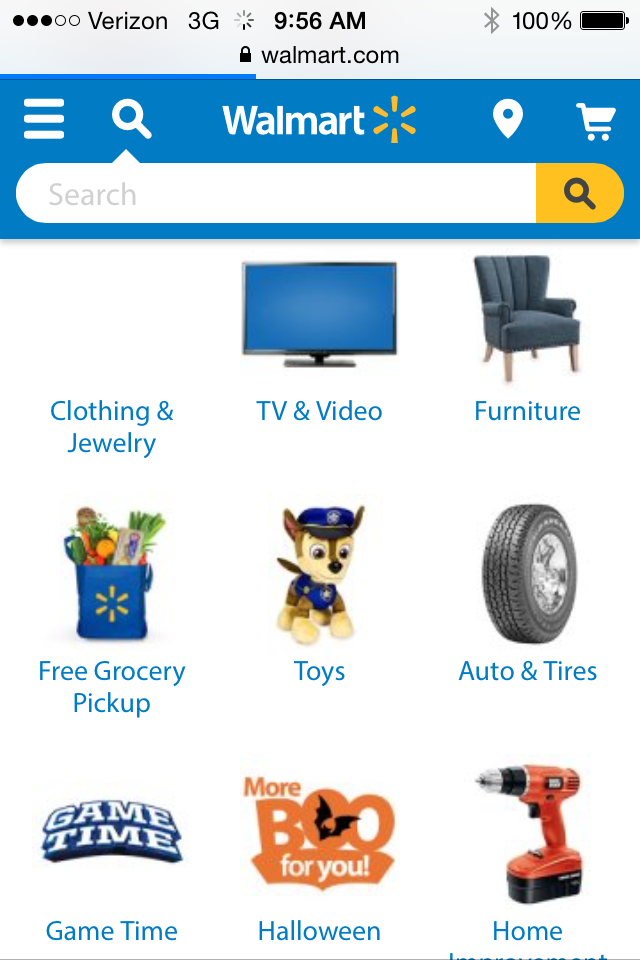
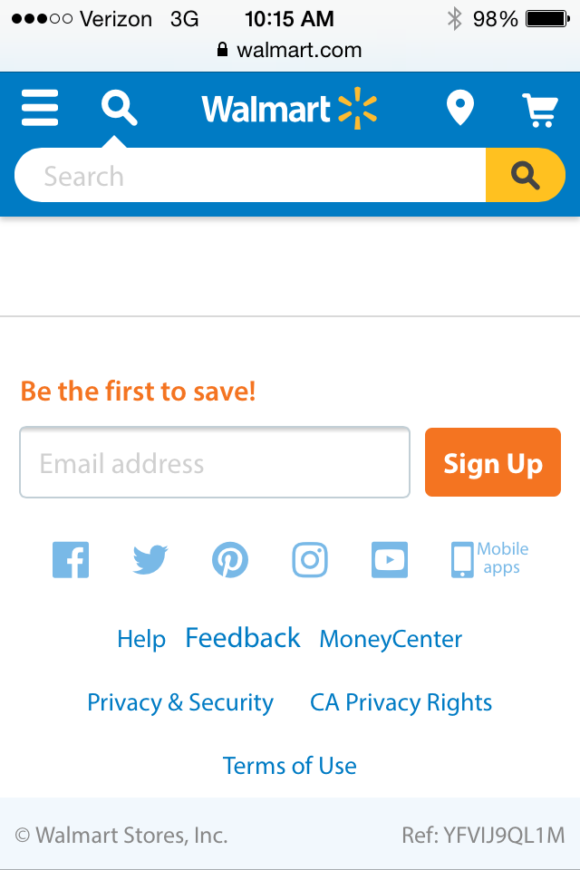
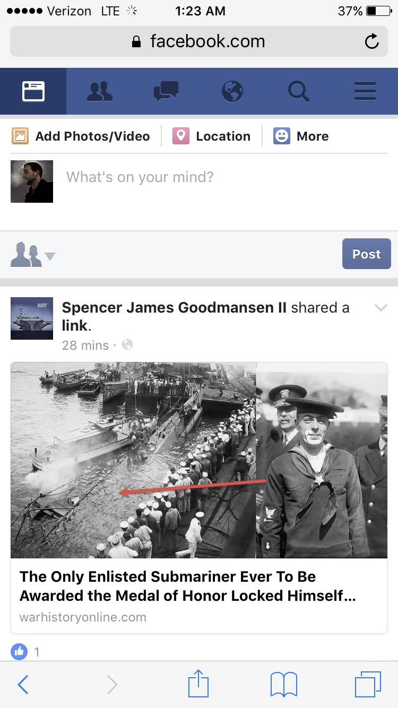
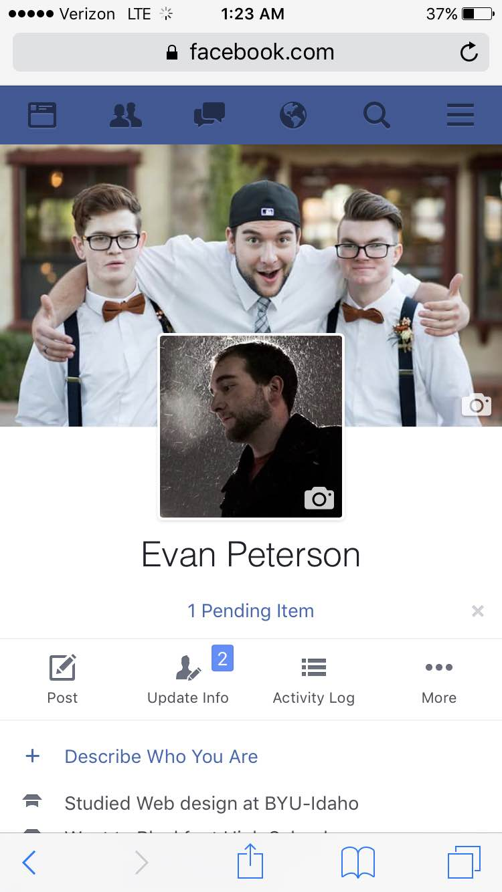
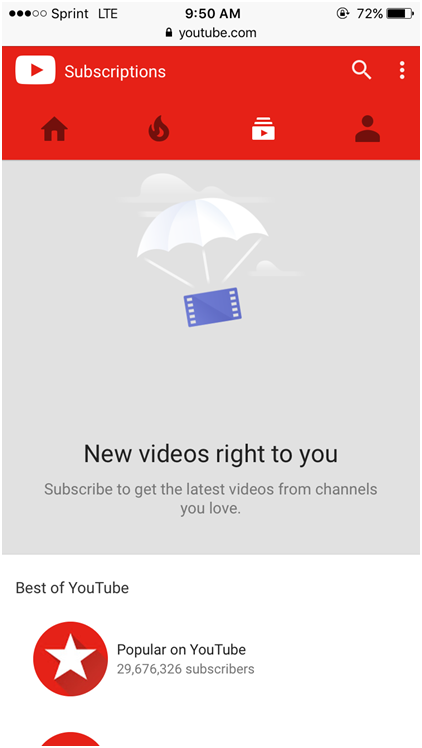
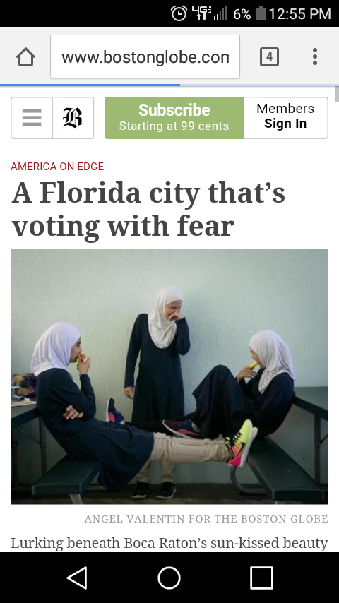
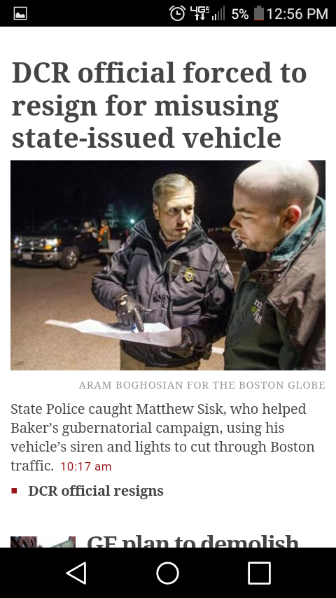

Design Principles in Mobile Sites
Proximity — Calvin Milliron
IMDb’s mobile site uses good proximity to separate the different aspects of the site. There is plenty of space between the menu button and logo at the top left. The search function hugs the right side, giving the logo its proper space. The space under the search function is accented by a color change to accent the trailer section. There is plenty of room after the trailer section and a color change to give the showtimes section its own focus, and there is even a colored separation bar before the featured article starts, giving everything its own area to allow anyone to find what they are looking for no matter their preference.
Alignment — Samantha Sullivan
 Walmart.com is a good example of alignment. One specific case of good use of alignment is in the category list on the homepage. The group of images are lay out in a grid format that makes it easy to navigate and is easy to tell they are in a list. The alignment is both vertical and horizontal on this page. When we look at the bottom of the home page, icons are aligned to show relationship. This overlaps a little with the design principle of proximity.
Repetition — Evan Peterson
 I chose Facebook as my example of good repetition. I only gave two screenshots to avoid giving away too much of my Facebook information but anywhere I went on the site the same navigation bar was at the top. Having this same thing repeated throughout made it really easy to navigate their website. Even when the main content changes a user never gets lost with the navigation bar at the top
Contrast — Brianna Groom
YouTube does a great job adding contrast into their website which helps with user ability. The bright red and blue form a nice contrast against the light gray and white. The typography uses size contrast and also the weight of the fonts contrast each other. Titles are bigger and bolder compared to subtitles that are lighter and smaller. There is also color and hue contrast in the navigation bar. The page the visitor is one turns white in the navigation bar and the others remain dark. Also the navigation bar uses contrasting shapes to differentiate between the functions of each page.
Typography — Efoshkin Maksim
 In my perspective Bostonglobe.com implemented all principles of web design very well especially the principle of Typography. Typography is an art form of applying design elements to letters and text. Typography helps users to navigate through a mass of information that is on a web page and to quickly pick up information that is required. In other words, it helps meaningfully skim a page. It is extremely important in our competitive world. This quality means whether the business is going to be on the market or going to be gone away. The Boston globe used Serif typeface to underline the explicitness of style. Kerning and Tracking provide distinguishable difference in news sections, it goes along with the principle of contrast that captures attention of a user and facilitates navigation of the page. Every news header is highlighted in a big font size. Then the main body that is highlighted with smaller font size and lesser Kerning and tracking. All together it makes the page very readable and easy to navigate. Every paragraph has its own style and fonts, a user can distinguish the Title, the main body of information and the main bullet points. All of the above principles help to fulfill the website’s mission of providing users with current information and helps him save the time. In my perspective Typography helps to identify information and provides business with tools so necessary to success.